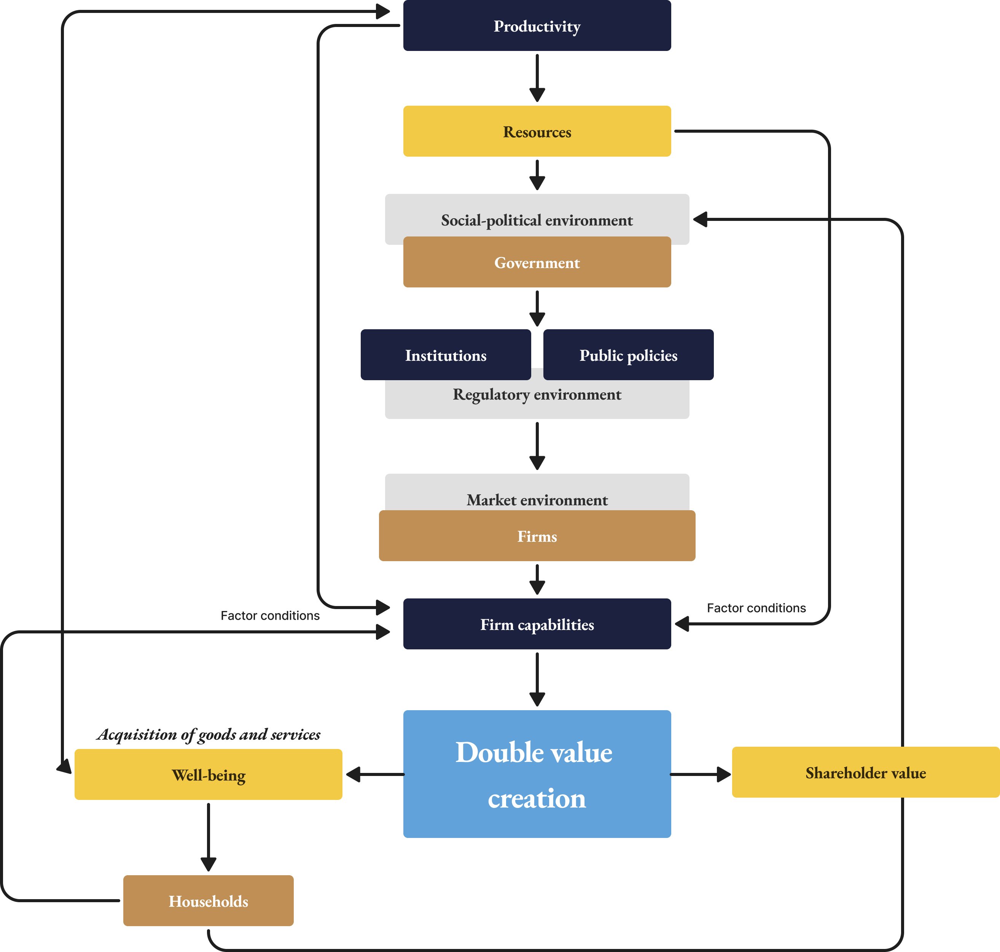
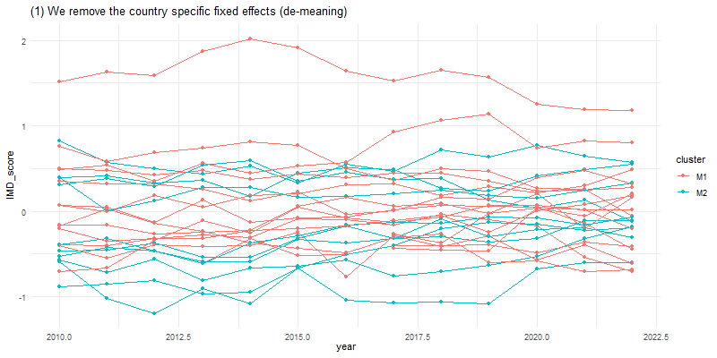
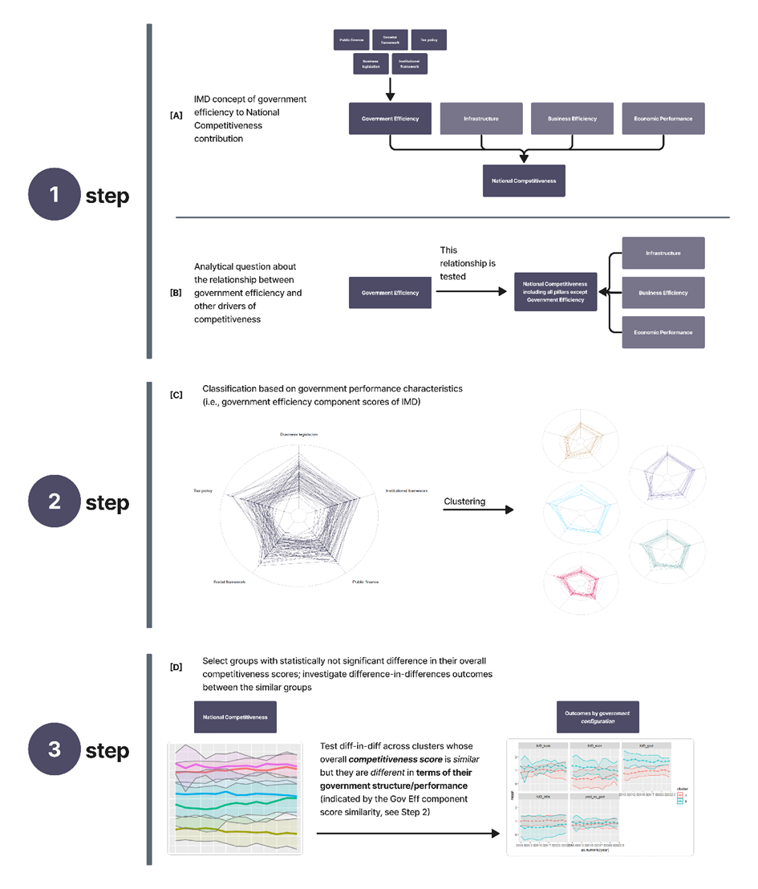
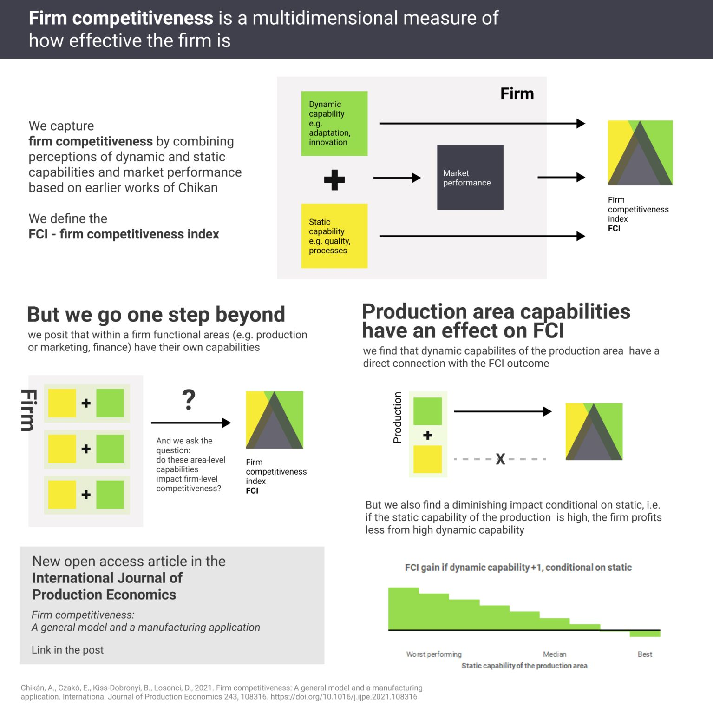

General competitiveness
Attila Chikan has a concept of competitiveness linking together micro- and macro-level economic planes and micro- and macro-level competitiveness. There is a long-standing research program in Hungary, surveying firms every few years since the 90s, which mostly investigates this competitiveness concepts and links it to a variety of firm characteristics and behaviours. This is run by the Competitiveness Research Centre (CRC) at Corvinus University of Budapest.

This is a recent interpretation of Chikan's model from my dissertation
I, having been taught by two prominent scholars from this initiative (Erzsebet Czako and Attila Chikan) at Rajk College have been collaborating to the research effort for years. Below I present two articles that I've contributed to, but there are many more - English and/or Hungarian - out there. (Best overview of the program by 1995-2018 in Hungarian here).
Papers:
Firm competitiveness: A general model and a manufacturing application (International Journal of Production Economics, open access!)
This paper describes a firm-level competitiveness measure, that integrates many "process" dimensions beyond observed performance; it is tested on a Hungarian sample of firms. Then we look "inside" the firms and find a positive relationship between so-called dynamic capabilities and overall competitiveness.Government influence on national competitiveness (evidence from the COVID era) (Competitiveness Review, AAM version - free download - here)
Using IMD national competitiveness scores we look at how countries with different government policy "configurations" (i.e., more welfare leaning, more market liberal) fared through the pandemic in terms of competitiveness scores. We find that those who were a bit more welfare leaning did better. We also find that similar levels of competitiveness are possible with different government 'configurations'.
Government influence on national competitiveness (evidence from the COVID era)
First, here is a cool gif that shows the main idea of the methodology of the second article:

And then we had this 'graphical abstract' which never made it into publication:

Firm competitiveness: A general model and a manufacturing application
The below figure summarises what we found in the article:
